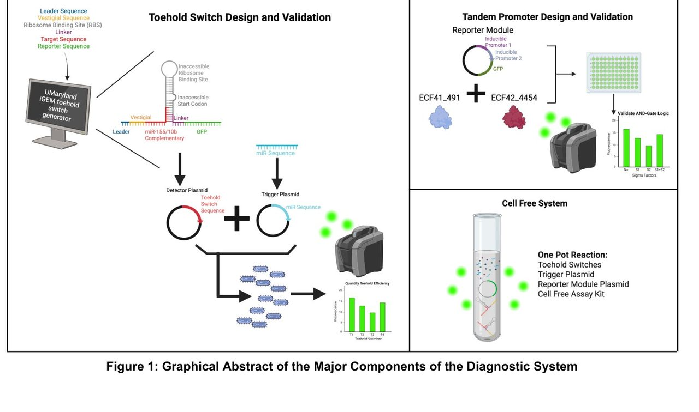

Home Featured work Breast cancer diagnostic
01 · Diagnostics · Senior design
A cancer test that waits for two signals
My senior design capstone. We built a cell-free test that only gives a result when two cancer-linked microRNAs show up together, so one noisy marker cannot set it off. Both sensors worked and both stayed quiet off target. The logic gate that joins them never cloned, so the full system was never assembled.
- Timeline
- Aug 2024 – May 2025
- Context
- BME406L senior design, Duke
- Team
- 4 students, 2 faculty advisers
- My role
- First author. Tandem promoter design, validation and verification; data curation; figures
- Tools
- uMaryland iGEM, RNAcofold, RNAup, DinaMelt, De Novo DNA, E. coli transformation, PURExpress
- Headline outcome
- miR-10b switch 2 and miR-155 switch 7 activated on target and stayed quiet off target. The AND-gate reporter module failed to clone into pET28a, so the full system was never assembled.
The problem
Breast cancer survival is almost entirely a question of timing. Caught while the disease is still localized, the five-year relative survival rate is 99%. Caught late, it drops to somewhere between roughly 30% and 85% depending on stage. Cost follows the same curve: treatment at stage 0 to II runs about $60,000 to $83,000, and at stage III to IV about $130,000 to $135,000.
Mammography is the screening standard and it earns that position, but it needs a machine, a facility and a trained reader. In high-income countries roughly 70% of patients are caught at stage I or II. In low and middle income countries most are not. And the gap is not only international: counties along the Appalachians have measurably higher breast cancer mortality, driven substantially by screening access rather than by biology.
So we did not set out to beat a mammogram. We set out to build something that could run where a mammogram cannot: no imaging hardware, no radiologist, no cold chain if we could avoid it.
Why it is hard
MicroRNAs are a genuinely good target. They are short regulatory RNAs, heavily dysregulated in cancer, and they circulate in blood, so a liquid biopsy can reach them. The trouble is that no single microRNA is a clean cancer signal. Levels move with inflammation, with other disease, with the person. Build a test that fires on one marker and you will get false positives at a rate that makes it useless as a screen, which is exactly the failure mode that makes screening programs lose public trust.
The existing detection methods have the opposite problem. Quantitative RT-PCR is the gold standard and is very sensitive, but it needs laboratory equipment. Next-generation sequencing profiles everything and costs accordingly. Only a handful of microRNA diagnostics have FDA clearance at all, and those live in specialized oncology centers, which is precisely where our target patients are not.
The approach
We picked two markers with solid published support in breast cancer. miR-155 promotes proliferation and suppresses apoptosis through PTEN, PI3K and AKT. miR-10b runs through the TWIST-1 pathway and is associated with metastasis. Different mechanisms, different stories, which is part of why requiring both is meaningful rather than redundant.
To read them we used toehold switches: synthetic RNA hairpins that bury the ribosome binding site and start codon inside their own stem, so the gene downstream cannot be translated. Each switch has a single-stranded toehold at one end. When the target microRNA binds there, it unzips the hairpin, exposes the ribosome binding site, and the reporter gets made. A sensor with no electronics in it, which is the whole reason it could work in a clinic with no equipment.
The design decision I care most about is what sits downstream. Rather than wiring one switch to one reporter, we designed a reporter module driven by tandem promoters acting as an AND gate, so GFP is expressed only when both microRNAs have been detected. One elevated biomarker does nothing on its own. That is the difference between a test you could hand to a clinic and a test that generates false positives at scale.

Screening the designs before touching a bench
We designed a library of candidate switches per target and screened them computationally before committing to any wet work, using three independent algorithms so we were not trusting a single model: the University of Maryland iGEM toehold generator, RNAcofold and RNAup. For each candidate we looked at the change in minimum free energy, the free energy of binding to its intended target, and, critically, the free energy of binding to the wrong targets. We ran off-target analysis against miR-21 and against each other's target.
That gave us a two-sided selection rule rather than a one-sided one: strong predicted binding to the intended microRNA, weak predicted binding to everything else. miR-10b switches 2, 5 and 7 and miR-155 switches 4, 5 and 7 passed. We then folded each in DinaMelt to confirm the hairpin actually forms and holds at 25°C, which it did.
For the AND-gate linker we used De Novo DNA to profile transcription start sites across the construct. The short AT-rich linker ATTATATAAT produced a strong, localized initiation peak on the forward strand and only a weak, broad peak on the reverse. Transcription going one direction, hard, which is what an AND gate needs if the second promoter is not going to fight the first.
What I did
I am first author and the manuscript's contribution statement credits me with methodology, investigation, data curation, the tandem promoter research, the experimental validation and verification of the tandem promoters, and figure creation.
In practice that means the AND gate was my piece. I did the work on what linker to use between the promoters and why, ran the transcription-start-site analysis that chose it, and then did the experimental validation. It also means the part that failed was mine, which is a reasonable thing for a portfolio to be upfront about.
My teammates owned the other halves: Shubhika Munot led plasmid design for the toehold switches and reporter modules and the construct verification, Christian Pile led conceptualization and the microRNA detection and quantification methodology, and Andy Sun led validation and tandem promoter research alongside me. Dr. Emma Chory and Dr. Cameron Kim advised.
Results
We cloned the selected switches into de novo plasmids built on validated Addgene backbones, then sequentially double-transformed E. coli with a target microRNA plasmid and its matching toehold switch plasmid, induced with IPTG, and measured GFP at 120 minutes normalized to OD600 so differences in cell density did not contaminate the readout.
- miR-10b switch 2 gave clearly the highest fluorescence against the no-switch control. The other two candidates did not separate from control.
- All three miR-155 switches beat control, with switch 7 highest.
- The off-target controls held. Feeding miR-10b switch 2 the wrong microRNA dropped GFP below control. For miR-155 switch 7 the off-target signal was indistinguishable from control. The specificity we predicted in silico showed up in cells, which is the result I am happiest with because it means the three-algorithm screen was doing real work rather than generating confidence.
- The cell-free system itself was validated separately with a known EforRed toehold and its trigger, so we knew the readout chemistry was sound independent of our constructs.
What did not work
We tried to clone the tandem-promoter reporter module into a pET28a backbone, chosen for T7 compatibility and modularity. Sequence alignment came back showing the module had not integrated. We tried again and ran out of semester.
So the honest state of the project is: two validated, specific microRNA sensors, a validated cell-free readout, a computationally designed AND gate with a defensible linker choice, and no assembled system. We never demonstrated the thing that makes the idea worth doing.
Both halves of the sensor worked and were specific. The piece that would have made it a product is the piece we could not build in the time we had.
What I learned
We spent most of our in-silico effort on the sensors, which were the interesting science, and comparatively little on the reporter module, which was the integration risk. That is backwards, and I did not see it until it cost us.
The toehold switches had three independent algorithms agreeing on them before we ordered a single oligo. The tandem promoter construct had a transcription-start-site profile and an assumption that a standard backbone would accept it. One of those is a plan and the other is a hope.
The lesson has carried into everything since: the component with the least novelty is usually the one you under-plan, and it is where the schedule dies. Now when I scope work I ask which step has the highest chance of failing quietly, not which step is most interesting, and I front-load that one. I used exactly that framing at Oak Street Health when the risky part of a care-gap pilot turned out to be the clinic schedule rather than the analysis.
What I would do next
- Run the reporter cloning in parallel with sensor validation, not after it. They had no real dependency. Sequencing them was a habit, not a requirement, and running them concurrently would have surfaced the cloning problem with months left instead of weeks.
- Try a different backbone, and try two at once. We treated pET28a as a given because it was modular and T7-compatible. A second backbone in parallel costs very little and covers the case where the problem is the vector rather than the insert.
- Characterize the dynamic range, not just the on-off. We showed the switches activate. We never established what concentration of microRNA they need, which is the number that decides whether this works on a real blood sample rather than on a plasmid-expressed trigger.
- Price it. The entire premise is access, and we never costed a reaction. A per-test cost would have made the argument concrete rather than directional.